Part 9 · Traffic Control for Bicycle Facilities · Chapter 9D
Guide and Service Signs
Bicycle destination, distance, and route guide signs (D1, D2, D3, D4, D10, D11 series and M1/M2/M3/M4/M5/M6 route/auxiliary signs), numbered and named bikeway systems, mode-specific and destination guide signs for shared-use paths, two-stage bicycle turn box guide signs, and General Service signing for bikeways.
9D.01Bicycle Destination Signs (D1-1b, D1-1c, D1-2b, D1-2c, D1-3b, D1-3c, D2-1a, D2-2a, and D2-3a, D3-1 and D3-1a)
Support — Background/Explanatory
- 00Refer to FHWA's List of Known Errors for an error in the Section title. Refer to Section 1A.04 for more details.
- 01The purpose of Bicycle Destination (D1-1b, D1-1c, D1-2b, D1-2c, D1-3b, and D1-3c) signs (see Figure 9D-1) and Bicycle Distance (D2-1a, D2-2a, and D2-3a) signs (see Figure 9D-1) is to provide guidance to bicyclists traveling along a bikeway network directing them to typical bicycle destinations or points of interest. The smaller size of Bicycle Destination and Distance signs can deemphasize the messages to motorists, especially when the direction(s) or destination(s) displayed provides access to routes or pathways where the use of motor vehicles is prohibited or discouraged. Examples include, but are not limited to: (A) bicycles can go in a direction counter to conventional traffic; (B) access to a separated bikeway or shared-use path from a street; (C) access to a bicycle route; (D) bicycles are directed to another roadway or bikeway that facilitates a parallel or alternative route to the same destination; or (E) access to a sidewalk that provides connectivity between bicycle facilities.
- 02Section 2D.36 contains information on Destination signs used for when the destinations listed would apply to both motorists and bicyclists.
- 03Section 2D.43 contains information on Distance signs used for when the destinations listed would apply to both motorists and bicyclists.
Standard — Mandatory Requirement
- 04Because of their smaller size, Bicycle Destination and Distance signs shall not be used as a substitute for vehicular destination signs when the message is also intended to be applicable to motorists.
Option — Permissive
- 05Bicycle Destination and Distance (D1-1b, D1-1c, D1-2b, D1-2c, D1-3b, D1-3c, D2-1a, D2-2a, and D2-3a) signs may be installed to provide direction, destination, and distance information as needed for bicycle travel. If several destinations are to be shown at a single location, they may be placed on a single sign with an arrow (and the distance, if desired) for each name. If more than one destination lies in the same direction, a single arrow may be used for the destinations.
- 06Destination (D1-1 and D1-1a) signs (see Section 2D.36) and Street Name (D3-1) signs (see Section 2D.45) may be installed instead of or in addition to Bicycle Destination signs as needed if the Destination or Street Name sign applies to motorists and bicyclists.
- 07Distance (D2-1 through D2-3) signs (see Section 2D.43) may be installed instead of, or in addition to, Bicycle Distance (D2-1a through D2-3a) signs, as needed, if the destination and distance information applies to motorists and bicyclists.
Guidance — Recommended Practice
- 07aStreet Name (D3-1 or D3-1a) signs should be installed at intersections of Class I bikeways with other bikeways and with streets.
Option — Permissive
- 07bStreet Name (D3-1 or D3-1a) signs may be installed at all street and shared-use path intersections.
Guidance — Recommended Practice
- 08Adequate separation should be made between any destination or group of destinations in one direction and those in other directions by suitable design of the arrow, spacing of lines of legend, heavy lines entirely across the sign, or separate signs.
- 09Where a Bicycle Destination sign with distance information is located less than 1/2 mile from the destination, the distance displayed should be to the nearest 1/4 mile. Where the distance to be displayed on a Bicycle Destination sign is less than 1/4 mile, the distance should be displayed in feet, rather than miles, to the nearest 50 feet.
Standard — Mandatory Requirement
- 09aFor Memorial Bikeway signs, one sign shall be placed at each terminal. Signs shall be white on green. When used, the Memorial Bikeway (G12-3(CA)) sign (refer to Figure 9D-1(CA)) shall be placed at the beginning of the bikeway segment memorialized by the Legislature.
Option — Permissive
- 10Distances may be displayed in fractions of a mile to the nearest 1/10 mile to communicate distance information on Bicycle Destination signs where the distance to a destination is desired to be more precise than 1/4-mile increments.
Support — Background/Explanatory
- 11Section 2A.08 contains provisions on the display of fractions on guide signs.
Standard — Mandatory Requirement
- 12An arrow pointing to the right, if used, shall be at the extreme right-hand side of the sign. An arrow pointing left or up, if used, shall be at the extreme left-hand side of the sign. The distance numerals, if used, shall be placed to the right of the destination names.
- 13Except as provided in Paragraph 14 of this Section, a bicycle symbol shall be placed next to each destination or group of destinations.
Option — Permissive
- 14An oversized bicycle symbol may be displayed as the top line of a Bicycle Destination sign instead of individual bicycle symbols for each of the destination/distance lines.
Standard — Mandatory Requirement
- 15If an arrow is at the extreme left, the bicycle symbol shall be placed to the right of the respective arrow.
Guidance — Recommended Practice
- 16Where the arrow is at the extreme right, the bicycle symbol should be to the left of the destination legend.
- 17Unless a sloping arrow will convey a clearer indication of the direction to be followed, the directional arrows should be either horizontal or vertical.
- 18If several individual name signs are assembled into a group, all of the signs in the assembly should have the same horizontal width.
- 19Travel times should not be used on Bicycle Destination signs.
Support — Background/Explanatory
- 20Travel times can vary greatly for bicyclists based on a variety of factors including individual speed, bicycle type, and type of facility.
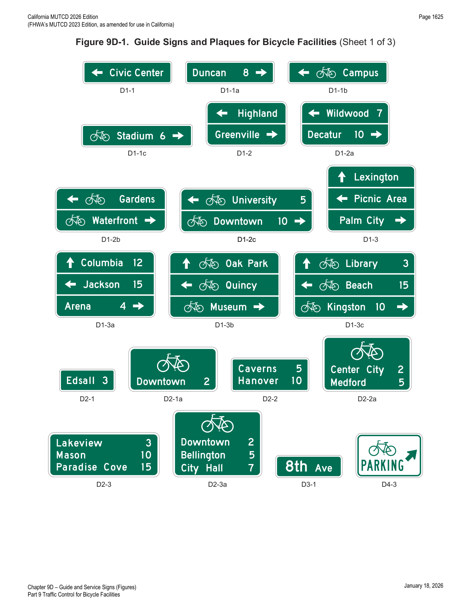
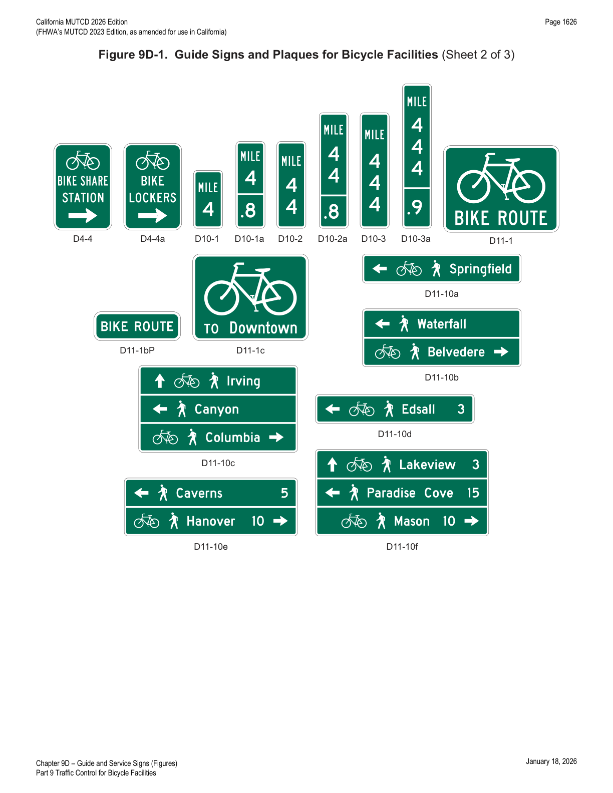
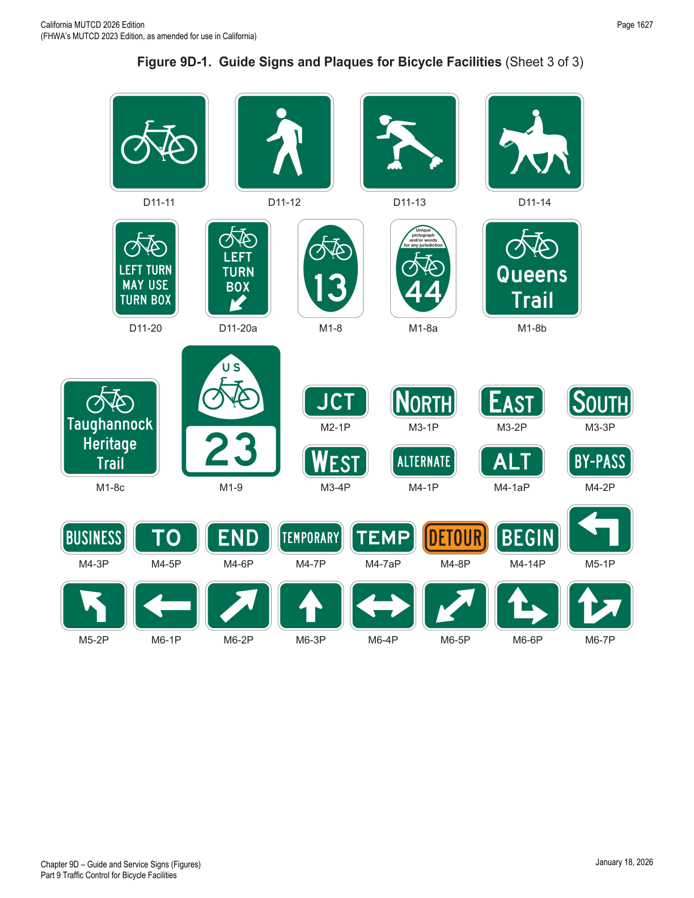
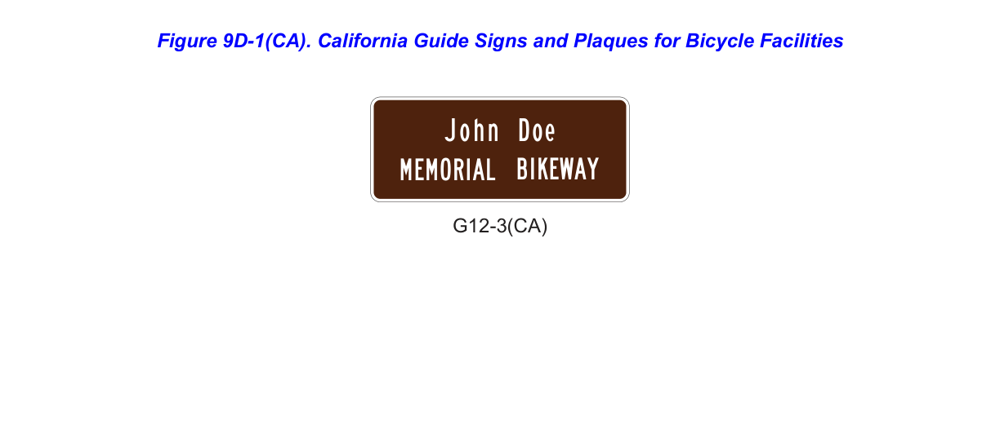
9D.02Bike Route Guide Signs (D11-1 and D11-1c)
Support — Background/Explanatory
- 01The Bike Route Guide (D11-1 or D11-1c) sign (see Figure 9D-1) is used where no unique designation of routes is desired. Sections 9D.04 through 9D.07 contain information for Bicycle Route signs where the bicycle route is designated by number, name, or both.
Option — Permissive
- 02Bike Route Guide signs may be provided along designated unnumbered, unnamed bicycle routes to inform bicyclists of bicycle route direction changes and to confirm route direction and destination.
- 03If used, Bike Route Guide signs may be repeated at regular intervals so that bicycles entering from side streets will have an opportunity to know that they are on a bicycle route. Similar guide signing may be used for shared roadways with intermediate signs placed for bicycle guidance.
- 04The Alternative Bike Route Guide (D11-1c) sign may be used to display a word legend that provides information on route direction, destination, and/or route name in place of the "BIKE ROUTE" word legend on the D11-1 sign (see Figure 9D-1).
- 05Other plaques such as BEGIN (M4-14P) and END (M4-6P) may be used with Bike Route Guide signs.
Guidance — Recommended Practice
- 06Travel times should not be used on Bike Route Guide signs.
Support — Background/Explanatory
- 07Travel times can vary greatly for bicyclists based on a variety of factors including individual speed, bicycle type, and type of facility.
- 08Figure 9D-2 shows examples of guide sign applications for bicycle travel.
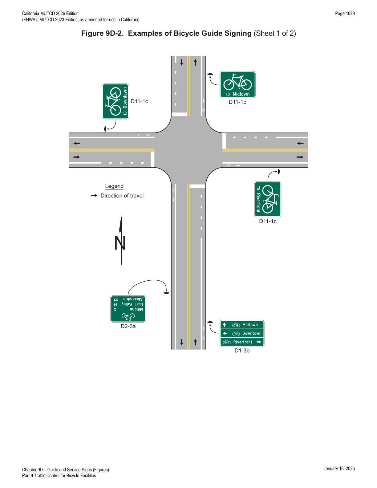
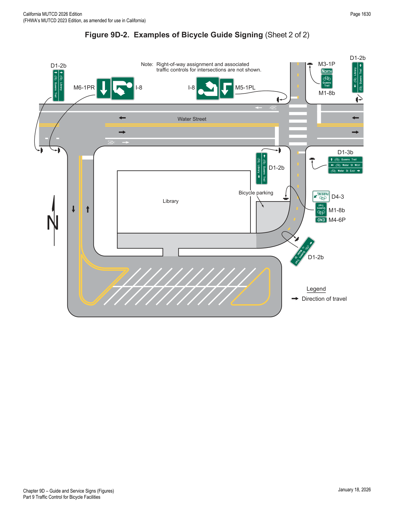
9D.03BIKE ROUTE Plaque (D11-1bP)
Option — Permissive
- 01The BIKE ROUTE (D11-1bP) plaque (see Figure 9D-1) may be installed to supplement: (A) the Alternative Bike Route Guide (D11-1c) sign (see Section 9D.02); (B) the Bicycle Directional (D11-11) sign (see Section 9D.11) for use on a shared-use path; or (C) a Street Name (D3-1) sign (see Section 2D.45).
- 02When installed above or below a Street Name sign, the D11-1bP supplemental plaque may include a bicycle symbol to the left of the BIKE ROUTE legend.
Standard — Mandatory Requirement
- 03The bicycle symbol shall not be used on a Street Name sign.
- 04Where a BIKE ROUTE plaque is used in conjunction with a Street Name sign to identify a street that is part of an overall bicycle network, one of the following signs shall also be used systematically to establish the designated bicycle route on the street identified by the BIKE ROUTE plaque: (A) Bike Route Guide signs (see Section 9D.02); (B) Alternative Bike Route Guide (D11-1c) sign (see Section 9D.02); (C) State or Local Bicycle Route (M1-8 and M1-8a) signs (see Section 9D.05); (D) Non-Numbered Bicycle Route (M1-8b and M1-8c) signs (see Section 9D.06); or (E) United States Bicycle Route (M1-9) sign (see Section 9D.07).
- 05BIKE ROUTE plaques shall not incorporate replicas of the United States Bicycle Route, State or Local Bicycle Route, or Non-Numbered Bicycle Route sign to replace or supplement the bicycle symbol.
Option — Permissive
- 06The BIKE ROUTE plaque and the Street Name sign may be different widths.
Support — Background/Explanatory
- 07Figure 9D-3 shows an example of bicycle guide signing using the BIKE ROUTE plaque.
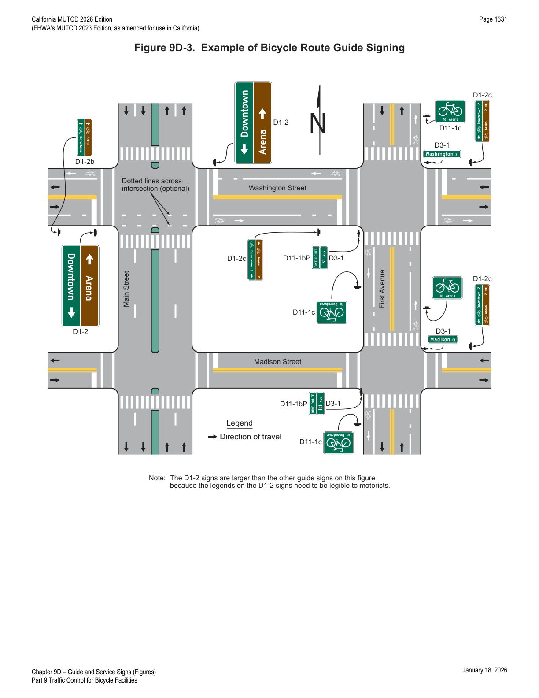
9D.04Numbered Bikeway Systems
Support — Background/Explanatory
- 01The purpose of numbering and signing bikeways and bicycle routes is to identify routes and facilitate travel.
- 02The United States Bicycle Routes are numbered by the American Association of State Highway Transportation Officials (AASHTO) upon recommendations of State highway organizations. County and local bikeways and bicycle routes are numbered by the appropriate authorities.
- 02aRefer to FHWA's List of Known Errors for an error in Paragraph 2 text. Refer to Section 1A.04 for more details.
- 03Bicycle route sign systems can be used to distinguish junctions, turns, the beginning of routes, and route termination points. Extensive use of reassurance markers is typically not needed.
- 04An agency or jurisdiction can use several methods for bicycle route guidance including maps, information guides, or signing.
Guidance — Recommended Practice
- 05Establishing bicycle route systems described in Paragraph 2 of this Section and any other bicycle route system should be followed with effective communication between affected jurisdictions. County and local jurisdictions that are establishing numbered routes should coordinate with the respective State transportation agency. Care should be taken to avoid the use of numbers or other designations that have been assigned to U.S. Bicycle Routes or other routes in the same geographical region or State. Overlapping numbered routes should be kept to a minimum.
- 06Bicycle routes, which might be a combination of various types of bikeways, should establish a continuous routing.
Standard — Mandatory Requirement
- 07Multiple numbered bicycle route systems shall be given preference in this order: United States, State, and county or local. The preference shall be given by installing the highest-priority legend on the top or the left of the sign assembly with other numbered overlapping bicycle routes.
- 08Where applicable, multiple bicycle route systems with concurrency shall be signed in accordance with Figure 9D-4.
Guidance — Recommended Practice
- 09Numbered bicycle routes should be identified by route signs (see Sections 9D.05 through 9D.07) and auxiliary plaques (see Section 9D.08).
- 10If used, Bicycle Route signs should be placed at locations to keep bicyclists informed of changes in route direction.
Option — Permissive
- 11Bicycle Route signs may be installed on shared roadways, shared-use paths, or separated bikeways, or bike lane facilities to provide navigational guidance for bicyclists.
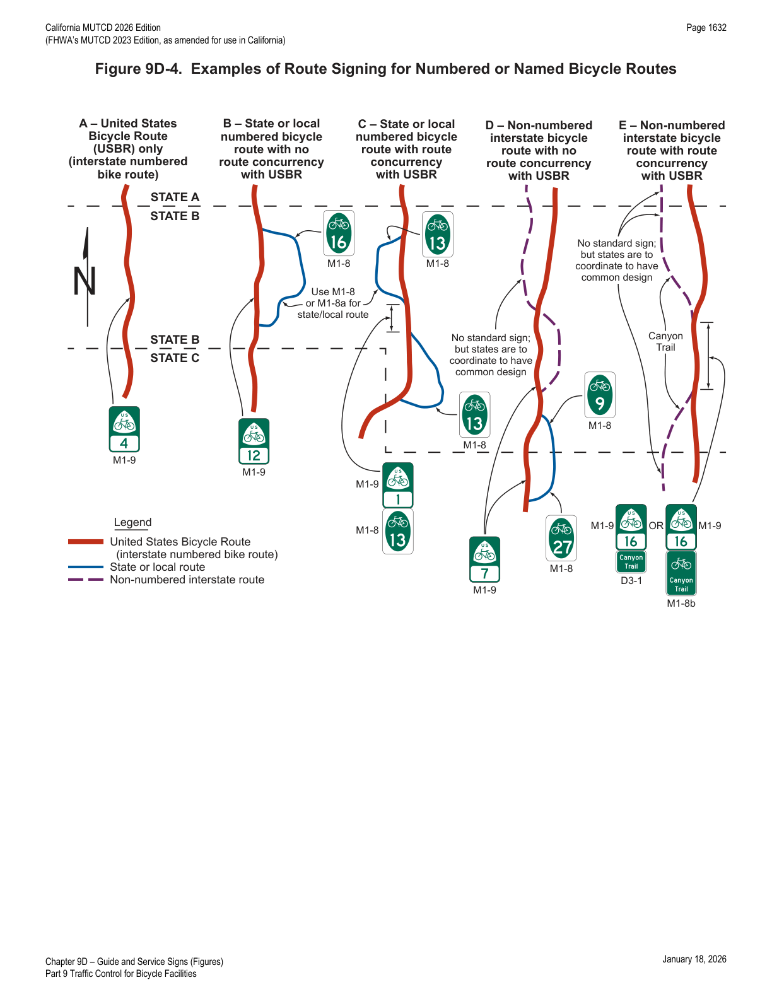
9D.05Numbered Bicycle Route Signs (M1-8 and M1-8a)
Option — Permissive
- 01To establish a unique identification (route designation) for a State or local bicycle route, the Bicycle Route (M1-8 or M1-8a) sign (see Figure 9D-1) may be used.
Support — Background/Explanatory
- 01aRefer to FHWA's List of Known Errors for an error in Paragraph 1 text. Refer to Section 1A.04 for more details.
- 01bThe Numbered Bicycle Route (M1-8a) sign may be used on public highways/bikeways where a numerical designation for bike routes is desired. The local agency that requests the M1-8a sign on State highways is responsible for furnishing, installing, and maintaining the signs.
Guidance — Recommended Practice
- 01cFor numbered bike routes initiated by the State, the Bike Route (D11-1) sign should be used on State highways. The District Traffic Engineer is responsible for approving the use of M1-8a signs on State highways.
Standard — Mandatory Requirement
- 02The Numbered Bicycle Route (M1-8) sign shall display a route designation and shall have a green background with a white legend and border.
- 03The Numbered Bicycle Route (M1-8a) sign shall display the same information as the M1-8 sign and in addition shall display a pictograph or words on the upper portion of the sign panel that are associated with the route or with the agency that has jurisdiction over the route.
- 04If a Numbered Bicycle Route (M1-8 or M1-8a) sign is used on a roadway, it shall include a bicycle symbol.
Guidance — Recommended Practice
- 05If a pictograph is used on the M1-8a sign, the maximum dimension (height or width) of the pictograph should not exceed 2 times the height of the route numeral, and should be contained within a green border. The minimum width of the graphic on the M1-8a sign should be 2/3 of the sign width, and the maximum width should be 9/10 of the sign width.
- 06If a bicycle symbol is used on the M1-8a sign, it should have a minimum height of 1/4 of the M1-8a sign panel height.
9D.06Non-Numbered Bicycle Route Signs (M1-8b and M1-8c)
Standard — Mandatory Requirement
- 01Except as provided in Paragraph 2 of this Section, Non-Numbered Bicycle Route (M1-8b and M1-8c) signs (see Figure 9D-1) used on roadways shall have a green background with a white border and shall include words identifying the bicycle route or a legend consisting of words identifying the bicycle route and a pictograph or bicycle symbol.
Option — Permissive
- 02Words identifying the bicycle route may be omitted on Non-Numbered Bicycle Route (M1-8b and M1-8c) signs where a pictograph includes the likeness of a bicycle that clearly identifies the route as a bicycle route.
Support — Background/Explanatory
- 03Bicycle routes are sometimes designated specifically by name or established using a distinctive route identity, but are not numbered or are intentionally excluded from an overall numbered bicycle route system.
- 04Section 9D.02 contains information for Bicycle Route signs where no unique designation route is beneficial or desired.
Option — Permissive
- 05Where a bicycle route is named instead of numbered, the Non-Numbered Bicycle Route sign may be used.
- 05aThe Non-Numbered Bicycle Route (M1-8b and M1-8c) signs may be installed above the Bike Route (D11-1) sign for those bicycle routes where a community or the responsible agency has given a designated name to selected routes.
- 06A green background or white border may be omitted on Non-Numbered Bicycle Route (M1-8b or M1-8c) signs used on shared-use paths.
Support — Background/Explanatory
- 07Certain uninterrupted, long-distance interstate bicycle routes can largely be on shared-use paths, or other off-roadway facilities. In order to achieve continuity, these bicycle systems might have to share alignments with urban streets, rural highways, or water crossings.
- 08Long-distance interstate bicycle routes can be administered by independent organizations serving other non-transportation objectives.
Guidance — Recommended Practice
- 09In order to provide signing on a facility managed by a transportation agency, a statewide policy for encouraging independent organizations to adopt the Non-Numbered Bicycle Route sign should be established.
9D.07U.S. Bicycle Route Sign (M1-9)
Guidance — Recommended Practice
- 01Where a designated bicycle route extends through two or more States, a coordinated submittal by the affected States for an assignment of a U.S. Bicycle Route number designation should be sent to the American Association of State Highway and Transportation Officials.
Standard — Mandatory Requirement
- 02The U.S. Bicycle Route (M1-9) sign (see Figure 9D-1) shall have a green legend and border with a white background and shall display the route designation as assigned by AASHTO.
9D.08Bicycle Route Sign and Auxiliary Plaques
Support — Background/Explanatory
- 01Section 2D.12 contains additional provisions for the design of route sign auxiliary plaques. Sections 2D.29 through 2D.34 contain additional provisions for the general application of route signs.
Guidance — Recommended Practice
- 02If a designated or numbered bicycle route is concurrent with a numbered highway, the route sign and auxiliary plaques for the bikeway should be installed as independent assemblies and should not be installed with other Route signs or confirmation assemblies for the numbered or named highway on the same assembly.
Standard — Mandatory Requirement
- 03Route signs for bikeways shall not be installed on guide signs or overhead.
Option — Permissive
- 04Route assemblies for a designated or numbered bicycle route may be installed at locations or distances other than those prescribed in Sections 2D.29 through 2D.34 if engineering judgment indicates that the operation or speed of the bicycle justifies alternate locations or distances.
- 05Auxiliary plaques (see Figure 9D-1) may be used in conjunction with Bicycle Route signs as needed.
Guidance — Recommended Practice
- 06If used, Junction (M2-1P), Cardinal Direction (M3 series), and Alternative Route (M4 series) auxiliary plaques should be mounted above the appropriate Bicycle Route signs.
- 07If used, Advance Turn Arrow (M5 series) and Directional Arrow (M6 series) auxiliary plaques should be mounted below the appropriate Bicycle Route signs.
- 08Except for the M4-8P plaque, all route sign auxiliary plaques should match the color combination of the route sign that they supplement.
- 09Route sign auxiliary plaques carrying word legends that are used on bicycle routes should have a minimum size of 12 x 6 inches. Route sign auxiliary plaques carrying arrow symbols that are used on bicycle routes should have a minimum size of 12 x 9 inches.
Standard — Mandatory Requirement
- 10If both the Junction (M2-1P), Cardinal Direction (M3 series), or Alternative Route (M4 series) auxiliary plaque and the Advance Turn Arrow (M5 series) or Directional Arrow (M6 series) auxiliary plaques are used on the same sign assembly as a Bicycle Route sign, the Junction, Cardinal Direction, or Alternative Route auxiliary plaque shall be installed above the Bicycle Route sign, and the Advance Turn Arrow or Directional Arrow auxiliary plaque shall be installed below the Bicycle Route sign.
Option — Permissive
- 11With route signs of larger sizes, auxiliary plaques may be suitably enlarged, but not such that they exceed the width of the route sign.
- 12A route sign and any auxiliary plaques used with it may be combined on a single sign as a guide sign.
Support — Background/Explanatory
- 12aRefer to FHWA's List of Known Errors for an error between Paragraphs 12 and 13. Refer to Section 1A.04 for more details.
- 13Figure 9D-3 shows typical placements of signs for bicycle routes.
Standard — Mandatory Requirement
- 14If used, a Bicycle Route sign assembly shall consist of a route sign and auxiliary plaques that identify the route and indicate the direction.
Guidance — Recommended Practice
- 15If the bicycle route is signed, Bicycle Route sign assemblies should be installed on all approaches where that route intersects with other numbered bicycle routes.
Standard — Mandatory Requirement
- 16Within groups of assemblies, information for bicycle routes intersecting from the left shall be mounted at the left in horizontal arrangements and at the top or center of vertical arrangements. Similarly, information for bicycle routes intersecting from the right shall be at the right or bottom, and for straight-through bicycle routes at the center in horizontal arrangements or top in vertical arrangements.
- 17A Junction assembly shall consist of a Junction auxiliary plaque and a Bicycle Route sign. The Bicycle Route sign shall carry the number of the intersected or joined bicycle route.
Option — Permissive
- 18The Junction assembly may be installed in advance of intersections where a numbered bicycle route is intersected or joined by another numbered bicycle route.
Standard — Mandatory Requirement
- 19An Advance Bicycle Route Turn assembly shall consist of a Bicycle Route sign, an Advance Turn Arrow or word message auxiliary plaque, and a Cardinal Direction auxiliary plaque, if needed. If used, it shall be installed in advance of an intersection where a turn must be made to remain on the indicated route.
Option — Permissive
- 20The Advance Bicycle Route Turn assembly may be used in advance of intersecting routes. On the approach to an intersection with a numbered bicycle route, the Advance Bicycle Route Turn assembly may be used to pre-position turning bicyclists in the correct lane position from which to make their turn.
Standard — Mandatory Requirement
- 21A Directional assembly shall consist of a Cardinal Direction auxiliary plaque, if needed, a route sign, and a Directional Arrow auxiliary plaque.
Guidance — Recommended Practice
- 22The various uses of Directional assemblies should be as follows: (A) turning movements should be marked by a Directional assembly with a route sign displaying the number of the turning route and a single-headed arrow pointing in the direction of the turn; (B) the beginning of a route should be marked by a Directional assembly with a route sign displaying the number of that route and a single-headed arrow pointing in the direction of the route; (C) an intersected route on a crossroad where the route is designated on both legs should be designated by either two Directional assemblies (each with a route sign displaying the number of the intersected route, a Cardinal Direction auxiliary plaque, and a single-headed arrow pointing in the direction of movement on that route), or a Directional assembly with a route sign displaying the number of the intersected route and a double-headed arrow, pointing at appropriate angles to the left, right, or ahead; and (D) an intersected route on a side road or on a crossroad where the route is designated only on one of the legs should be designated by a Directional assembly with a route sign displaying the number of the intersected route, a Cardinal Direction auxiliary plaque, and a single-headed arrow pointing in the direction of movement on that route.
Option — Permissive
- 23Straight-through movements may be indicated by a Directional assembly with a route sign displaying the number of the continuing route and an M6-3P Directional Arrow — Through auxiliary plaque.
Guidance — Recommended Practice
- 24A Directional assembly should not be used for a straight-through movement in the absence of other assemblies indicating right or left turns, as the Confirming assembly sign beyond the intersection normally provides adequate guidance.
- 25Directional assemblies should be located on the near-right corner of the intersection. Where unusual conditions exist, the location of a Directional assembly should be determined by engineering judgment.
Support — Background/Explanatory
- 26It is more important that guide signs be readable, and that the information and direction displayed thereon be readily understood, at the appropriate time and place, than to be located with absolute uniformity.
Guidance — Recommended Practice
- 27If used, Confirming or Reassurance assemblies should consist of a Cardinal Direction auxiliary plaque and a route sign. Where the Confirming or Reassurance assembly is for an alternative route, the appropriate auxiliary plaque for an alternative route should also be included in the assembly.
- 28If used, a Confirming assembly should be installed just beyond intersections of numbered routes.
- 29If used, Reassurance assemblies should be installed between intersections in urban areas as needed, and beyond the built-up area of any incorporated city or town.
- 30If used, Bicycle Route signs for either confirming or reassurance purposes should be spaced at such intervals as necessary to keep bicyclists informed of their routes.
9D.09Bicycle Parking Area, Sharing Station, and Lockers Guide Signs (D4-3, D4-4, and D4-4a)
Support — Background/Explanatory
- 01Bicycle parking areas include bicycle racks or stands, parking stations or structures, sharing systems, or lockers. These facilities can be either regulated or unregulated.
Option — Permissive
- 02The Bicycle Parking Area (D4-3) guide sign (see Figure 9D-1) may be installed where it is desirable to show the direction to a designated bicycle parking area. The arrow may be reversed as appropriate.
- 02aThe Advance Turn Arrow or Directional Arrow auxiliary signs (refer to Sections 2D.26 and 2D.28) may be used in combination with and below the D4-3 sign to show direction to a designated bicycle parking area.
- 03The Bicycle-Sharing Station (D4-4) guide sign (see Figure 9D-1) may be installed to provide directional information to a designated bicycle-sharing system. The arrow may be reversed as appropriate.
- 04The Bicycle-Sharing Station guide sign may be modified with two lines to accommodate installation in constrained areas.
- 05The Bicycle Lockers (D4-4a) guide sign (see Figure 9D-1) may be installed where it is desirable to show the direction to designated bicycle lockers. The arrow may be reversed as appropriate.
Guidance — Recommended Practice
- 06If used, the Bicycle-Sharing Station guide sign should be used in conjunction with a regulated bicycle-sharing system such as one that requires the user to pre-register or provide a deposit in order to use a bicycle.
- 07Where it is determined that unregulated bicycle-sharing parking facilities necessitate a bicycle parking sign, the Bicycle Parking Area guide sign should be used.
Standard — Mandatory Requirement
- 08In accordance with Section 1D.07, Bicycle Parking Area, Sharing Station, and Lockers guide signs shall not include promotional advertising, business logos, or other identification that would convey the involvement of a public-private partnership for operating the bicycle parking facility or sharing system.
9D.10Reference Location Signs (D10-1 through D10-3) and Intermediate Reference Location Signs (D10-1a through D10-3a)
Support — Background/Explanatory
- 01There are two types of reference location signs: (A) Reference Location (D10-1, D10-2, and D10-3) signs (see Figure 9D-1) show an integer distance point along a shared-use path; and (B) Intermediate Reference Location (D10-1a, D10-2a, and D10-3a) signs (see Figure 9D-1) show the same information as Reference Location signs, but they also show a tenth-of-a-mile decimal so that they can be installed between integer distance points along a shared-use path.
Option — Permissive
- 02Reference Location (D10-1 through D10-3) signs may be installed along any section of a shared-use path to assist users in estimating their progress, to provide a means for identifying the location of emergency incidents and crashes, and to aid in maintenance and servicing.
- 03To augment the reference location sign system, Intermediate Reference Location (D10-1a to D10-3a) signs, which show the tenth of a mile with a decimal point, may be installed at one-tenth-of-a-mile intervals, or at some other regular spacing.
Guidance — Recommended Practice
- 04If Intermediate Reference Location (D10-1a through D10-3a) signs are used to augment the reference location sign system, the Reference Location sign at the integer mile point should display a decimal point and a zero numeral.
- 05Reference location signs for shared-use paths should have a minimum mounting height of 2 feet, measured vertically from the bottom of the sign to the elevation of the near edge of the shared-use path, and should not be governed by the mounting height requirements prescribed in Section 9A.02.
Option — Permissive
- 06Reference location signs may be installed on one side of the shared-use path only and may be installed back-to-back.
- 07If a reference location sign cannot be installed in the correct location, it may be moved in either direction as much as 50 feet.
Guidance — Recommended Practice
- 08If a reference location sign cannot be placed within 50 feet of the correct location, it should be omitted.
- 09Zero distance should begin at the south and west terminus points of shared-use paths.
Support — Background/Explanatory
- 10Section 2H.11 contains additional information regarding reference location signs.
9D.11Mode-Specific Directional Guide Signs for Shared-Use Paths (D11-11, D11-12, D11-13, and D11-14)
Option — Permissive
- 01Where separate pathways are provided for different types of users, mode-specific Directional Guide (D11-11, D11-12, D11-13, and D11-14) signs (see Figure 9D-1) may be used to guide different types of users to the pathway that is intended for their respective modes.
- 02Mode-specific Directional Guide signs may be installed at the entrance to shared-use paths where the signed mode(s) are permitted or encouraged, and periodically along these facilities as needed.
- 03The Bicycle Directional (D11-11) sign, when combined with the BIKE ROUTE (D11-1bP) supplemental plaque, may be substituted for the D11-1 Bike Route Guide sign on shared-use paths.
- 04When some, but not all, non-motorized user types are encouraged or permitted on a shared-use path, mode-specific Directional Guide signs may be placed in combination with each other, and in combination with signs (see Section 9B.08) that prohibit travel by particular modes.
Support — Background/Explanatory
- 05Figure 9D-5 shows an example of signing where separate pathways are provided for different non-motorized user types.
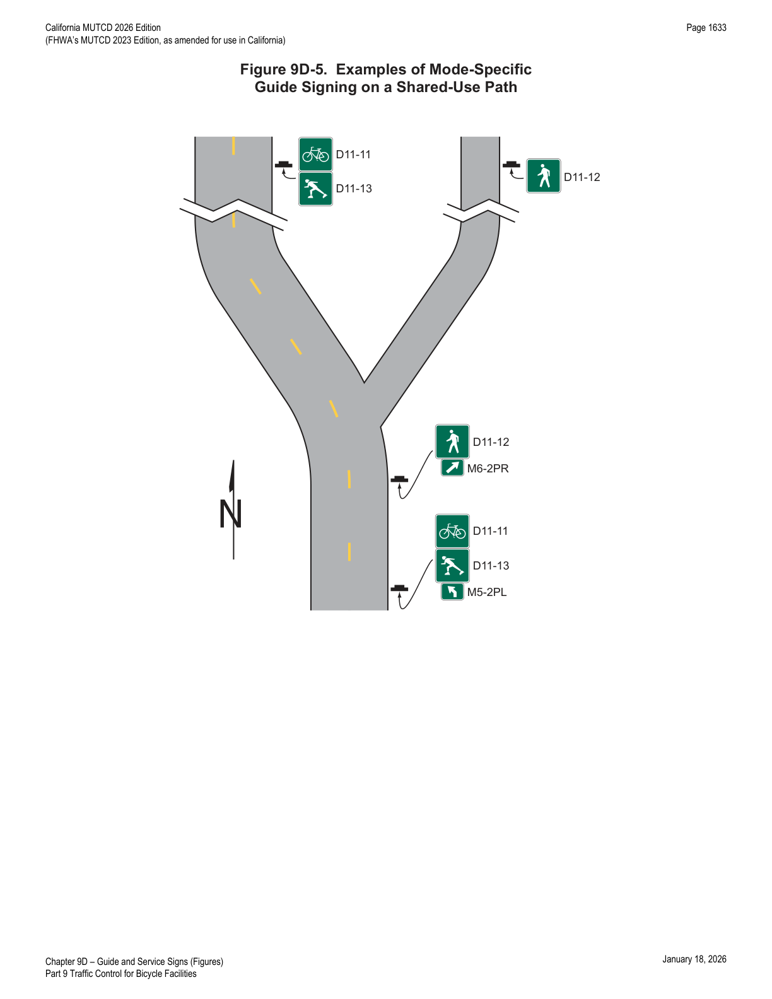
9D.12Destination Guide Signs for Shared-Use Paths (D11-10a, D11-10b, D11-10c, D11-10d, D11-10e, and D11-10f)
Support — Background/Explanatory
- 01This Section contains information on the application of Destination Guide signs for shared-use paths.
Standard — Mandatory Requirement
- 02Where bicycle traffic is allowed on the shared-use path, Destination Guide signs for shared-use paths and any identification markers shall be retroreflective.
Guidance — Recommended Practice
- 03Destination Guide signs for shared-use paths should be installed on independent assemblies and should not be combined with regulatory and warning signs.
Option — Permissive
- 04Destination Guide signs for shared-use paths may use symbols detailed in the "Standard Highway Signs" publication (see Section 1A.05) in addition to the bicycle symbol to display other modes permitted to use the shared-use path.
Standard — Mandatory Requirement
- 05If used, symbols on Destination Guide signs for shared-use paths shall be limited to those where the symbol displayed is an allowable mode on the path or pathway alignment, and where the symbol is supported by other regulatory signs to convey the operation. Symbols unrelated to the allowable modes that would otherwise display directional navigation to a facility, activity, or point of interest shall not be used.
Support — Background/Explanatory
- 06Chapter 2M contains information for symbol signs used for facilities, activities, and points of interest.
Guidance — Recommended Practice
- 07Destination Guide signs for shared-use paths, exclusive of any identification marker used, should be rectangular in shape. Simplicity and uniformity in design, position, and application as described in Section 2A.04 are important and should be incorporated into the sign design.
- 08Destination Guide signs for shared-use paths should be limited to three destinations per sign (see Section 2D.06).
- 09Abbreviations (see Section 1D.08) should be kept to a minimum, and should include only those that are commonly recognized and understood.
Support — Background/Explanatory
- 10Figure 9D-6 shows an example of a signing system of Destination Guide signs used on shared-use paths.
Standard — Mandatory Requirement
- 11The arrow location and priority order of destinations shall follow the provisions described in Sections 2D.08 and 2D.36. Arrows shall be of the designs provided in Section 2D.08.
- 12The lettering for destinations on Destination Guide signs for shared-use paths shall be a combination of lower-case letters with initial upper-case letters (see Section 2D.04). All other word messages on Destination Guide signs for shared-use paths shall be in all upper-case letters.
- 13Except as provided in Paragraph 15 of this Section, the lettering style used for destination and directional legends on Destination Guide signs for shared-use paths shall comply with the provisions of Section 2D.04.
Option — Permissive
- 14The distance to the place named may be displayed on the Destination Guide sign. If several destinations are to be displayed at a single point, the several names may be placed on a single sign with an arrow (and the distance, if desired) for each name. If more than one destination lies in the same direction, a single arrow may be used for such a group of destinations.
- 15A lettering style other than the Standard Alphabets provided in the "Standard Highway Signs" publication (see Section 1A.05) may be used on Destination Guide signs for shared-use paths if an engineering study determines that the legibility and recognition values for the chosen lettering style at minimum letter heights meet or exceed the values for the Standard Alphabets for the same legend height and stroke width.
Standard — Mandatory Requirement
- 16Where a shared-use path is within the highway right-of-way or crosses a street or highway, an alternative lettering style shall not be used.
Option — Permissive
- 17Pictographs (see definition in Section 1C.02) may be used on Destination Guide signs for shared-use paths.
Standard — Mandatory Requirement
- 18If a pictograph is used, its height shall not exceed 2 times the height of the upper-case letters of the principal legend on the sign.
- 19Business logos, commercial graphics, or other forms of advertising (see Section 1D.07) shall not be used on Destination Guide signs for shared-use paths or sign assemblies.
Option — Permissive
- 20An identification marker may be used in an assembly for Destination Guide signs applied to shared-use paths, or may be incorporated into the overall design of a Destination Guide sign, as a means of visually identifying the sign as part of an overall system of signs.
Standard — Mandatory Requirement
- 21The size of an identification marker shall be smaller than the Destination Guide sign. Identification markers shall not be designed to have an appearance that could be mistaken by road users as being a traffic control device.
Guidance — Recommended Practice
- 22The area of the identification marker should not exceed 1/5 of the area of the Destination Guide sign with which it is mounted in the same sign assembly.
Standard — Mandatory Requirement
- 23Except as provided in Paragraph 26 of this Section, Destination Guide signs for shared-use paths shall have a white legend and border on a green or brown background and shall be consistent with the basic design principles for guide signs.
- 24Color coding or pictographs shall not be used to distinguish between different types of destinations. If used, color coding shall be accomplished by the use of different colored square or rectangular panels on the face of the sign, each positioned to the left of the named geographic area to which the color-coding panel applies. The height of the colored square or rectangular panels shall not exceed 2 times the height of the upper-case letters of the principal legend on the sign.
Option — Permissive
- 25The different colored square or rectangular panels may include either a black or a white (whichever provides the better contrast with the color of the panel) letter, numeral, or other appropriate designation to identify the destination.
- 26Except where a shared-use path is within the highway right-of-way or crosses a street or highway, Destination Guide signs for shared-use paths may use background colors other than green or brown in order to provide a color identification for systematic destinations within the overall guide signing system.
Standard — Mandatory Requirement
- 27The standard colors of red, orange, yellow, purple, or the fluorescent versions thereof, fluorescent yellow-green, and fluorescent pink shall not be used as background colors for Destination Guide signs for shared-use paths, in order to minimize possible confusion with critical, higher-priority regulatory and warning sign color meanings readily understood by path users.
Option — Permissive
- 28Destination Guide signs for shared-use paths may display telephone numbers, Internet addresses, and e-mail addresses, including domain names and uniform resource locators (URLs).
Standard — Mandatory Requirement
- 29If used, the use of telephone numbers, Internet addresses, and e-mail addresses shall be limited to direct contact information of the jurisdiction with authority of the shared-use path, or contact information for emergency service response, or both. Contact information for advertising purposes shall not be used.
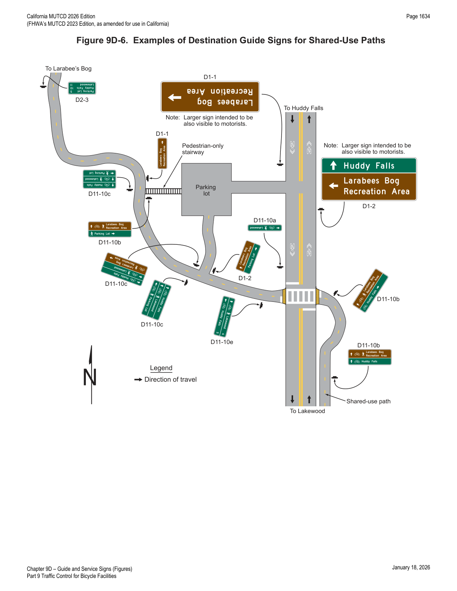
9D.13Two-Stage Bicycle Turn Box Guide Signs (D11-20 Series)
Support — Background/Explanatory
- 01Two-stage bicycle turn boxes provide a way for a bicyclist to make a turn in a manner such that a merge across the general-purpose lanes is not required.
- 02Section 9B.18 provides information about situations when the use of a two-stage bicycle turn box is required and also contains information about the Two-Stage Bicycle Turn Box (R9-23 series) regulatory signs.
- 03Section 9E.11 contains information regarding pavement markings for two-stage bicycle turn boxes.
Option — Permissive
- 04Where a two-stage bicycle turn box is provided, the Two-Stage Bicycle Turn Box guide sign series (see Figure 9D-1) may be used.
Standard — Mandatory Requirement
- 05Where used, the Two-Stage Bicycle Turn Box Advance (D11-20) guide sign shall be mounted in advance of the intersection where the turn box is located.
- 06Where used, the Two-Stage Bicycle Turn Box (D11-20a) guide sign shall be mounted on the far side of the intersection.
Option — Permissive
- 07Where the Two-Stage Bicycle Turn Box Advance (D11-20) guide sign is used, an additional Two-Stage Bicycle Turn Box Advance guide sign may be mounted on the near side of the intersection where the turn box is located.
- 08If used, an appropriately sized Street Name (D3-1) sign (see Section 2D.45) may be installed below the Two-Stage Bicycle Turn Box Advance guide sign to identify the crossroad where the turn box will be available.
Support — Background/Explanatory
- 08aRefer to FHWA's List of Known Errors for an error between Paragraphs 8 and 9. Refer to Section 1A.04 for more details.
- 09Figure 9D-7 shows an example of Two-Stage Bicycle Turn Box guide signs at a location where the use of the turn box is optional.
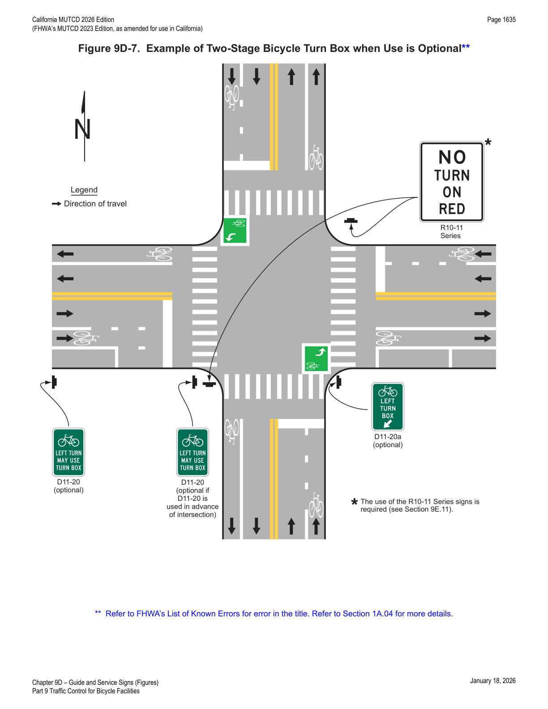
9D.14General Service Signing for Bikeways
Option — Permissive
- 01General Service signs (see Chapter 2I) may be used on bikeways.
Standard — Mandatory Requirement
- 02The sizes of General Service signs intended for viewing by both bicyclists and other road users shall comply with the sizes in Table 2I-1.
Option — Permissive
- 03General Service signs intended for the exclusive use of bicyclists may be of reduced size.
9D.101(CA)Signs on Overcrossing Structures
Support — Background/Explanatory
- 01Signage identifying overcrossing structures over a Class I or IV bikeway can be useful in orienting bikeway users.
- 02Consider the skew of the structure (greater than 45 degrees), height of the overcrossing structure, and other pertinent factors while determining the feasibility of installing the sign.
Option — Permissive
- 03Street Name (I2-3 and I2-3A) signs identifying the overcrossing structure over a Class I or IV bikeway may be installed on the overcrossing structure. If sign installation on the overcrossing is not practical, roadside sign installation may be considered.
Guidance — Recommended Practice
- 04Structural analysis should be considered prior to installation of signs on the overcrossing structure.
★ Key Takeaways — Chapter 9D
- Bicycle Destination and Distance signs (D1/D2 "b/c" and "a" variants) are deliberately undersized relative to standard motorist guide signs and must never substitute for a vehicular destination sign meant for motorists.
- Concurrent numbered bicycle route systems follow a strict priority order — United States, then State, then county/local — with the highest-priority legend on top or left of the assembly (Figure 9D-4).
- Route signs for bikeways (M1-8/8a/8b/8c/9) must never be installed on guide signs or overhead, and auxiliary plaques follow a fixed stacking order: Junction/Cardinal Direction/Alternative Route plaques above the route sign, Advance Turn Arrow/Directional Arrow plaques below it.
- Destination Guide signs for shared-use paths use white legend/border on green or brown (never the "hot" regulatory/warning colors — red, orange, yellow, purple, fluorescent yellow-green, fluorescent pink), are capped at three destinations per sign, and can carry direct-contact phone/URL/email information only — never advertising.
- Two-stage bicycle turn box guide signs (D11-20 advance / D11-20a at the box) are the optional-use counterpart to the mandatory-use R9-23 regulatory series in Chapter 9B — where the box is optional, the guide signs substitute for the regulatory signs.
- Reference Location signs establish a mile-point system along shared-use paths (zero at the south/west terminus), with Intermediate Reference Location signs filling in tenth-mile increments; both are exempt from the Section 9A.02 general mounting-height rule and instead use a 2 ft minimum.